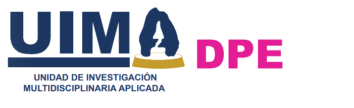

Departamento de Proyección Empresarial e Intercambio y Colaboración Institucional
Dr. Nemesio Orozco Sánchez
Jefe del Departamento
- Edificio A de la Unidad de Investigación Multidisciplinaria II, segundo piso.
- 📞 555623-1750, Ext. 38981, 38983
- ✉️ proyeccion.empresarial@acatlan.unam.mx
🎯 Nuestro Objetivo
- Crear un ecosistema emprendedor en la comunidad interna de la Facultad, para coordinar programas de emprendimiento, proveer servicios especializados, capacitar en temas empresariales, desarrollar modelos de negocio y promover servicios profesionales con objeto de fomentar la actitud emprendedora y la colaboración interna y externa.
📋 Funciones
▼
- Generar un ecosistema emprendedor dentro de la Facultad, para fomentar la actitud emprendedora en la comunidad interna.
- Coordinar el programa de emprendimiento e incubación de negocios.
- Proveer de estudios de mercado a las empresas del sector público y privado.
- Canalizar a la comunidad interna con áreas especializadas con relación a propiedad intelectual, patentes y derecho administrativo público y privado.
- Capacitar a la comunidad interna y externa sobre temas de emprendimiento.
- Desarrollar modelos de negocio para la comunidad interna.
- Promover servicios profesionales de personal especializado en las diferentes disciplinas con las que cuenta la facultad en el sector público y privado.
- Desarrollar el programa anual de actividades de investigación y de servicios de la Proyección Empresarial e Intercambio y Colaboración Institucional.
- Generar estrategias de marketing para la promoción de los servicios de la Coordinación de la Unidad de Investigación Multidisciplinaria Aplicada a partir de los diagnósticos de necesidades del entorno.
- Propiciar y regular la vinculación con los departamentos de la Coordinación de la Unidad de Investigación Multidisciplinaria Aplicada, para el mejor aprovechamiento de los recursos de las áreas comunes.
- Promover la formación de recursos humanos en Proyección Empresarial e Intercambio y Colaboración Institucional.
- Desarrollar actividades en vinculación con los programas de licenciatura y posgrado.
🌱 Proyectos de Incubación Vigentes
▼
- "Biodizarq" Despacho multidisciplinario de arquitectura y construcción que ofrece diseño y ejecución de diseños novedosos, flexibles y sustentables que se adaptan a los gustos y necesidades del cliente.
- "TERVI" Empresa especializada en proporcionar servicios de inspección de ductos y tuberías, evitando el desperdicio de agua y previniendo la contaminación.
🚀 Proyectos de Investigación Vigentes
▼
- "Fortalecimiento del Ecosistema Emprendedor en la FES Acatlán: Estrategias para el Desarrollo de Emprendimientos Sostenibles"
Esta investigación aplicada busca analizar y fortalecer la proyección empresarial en la Facultad de Estudios Superiores (FES) Acatlán mediante la implementación de estrategias innovadoras que impulsen el desarrollo de emprendimientos sostenibles. Se investigarán las principales barreras y oportunidades que enfrentan los estudiantes y egresados en la creación de empresas, proponiendo soluciones basadas en modelos de incubación, mentoría y vinculación con el sector productivo.
- Fecha de inicio: 01 de agosto de 2024
- Fecha de término: 01 de diciembre 2025